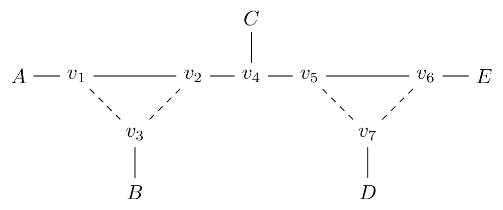

Rooted Level-1 Phylogenetic Networks
rooted trees
rooted 5-sunlets
rooted networks with a 4-cycle of type I
rooted networks with a 4-cycle of type II
rooted networks with a 4-cycle of type III
rooted networks with one 3-cycle of type I
rooted networks with one 3-cycle of type II
rooted networks with one 3-cycle of type III
rooted networks with one 3-cycle of type IV
`
rooted networks with a 3-cycle and a 4-cycle of type I
rooted networks with a 3-cycle and a 4-cycle of type II
rooted networks with a 3-cycle and a 4-cycle of type III
rooted networks with a 3-cycle and a 4-cycle of type IV
rooted networks with a 3-cycle and a 4-cycle of type V
rooted networks with two 3-cycles of type I
rooted networks with two 3-cycles of type II
rooted networks with two 3-cycles of type III

rooted networks with two 3-cycles of type IV
rooted networks with two 3-cycles of type V
rooted networks with two 3-cycles of type VI
rooted networks with two 3-cycles of type VII
rooted networks with three 3-cycles of type I
rooted networks with three 3-cycles of type II
rooted networks with three 3-cycles of type III
rooted networks with three 3-cycles of type IV